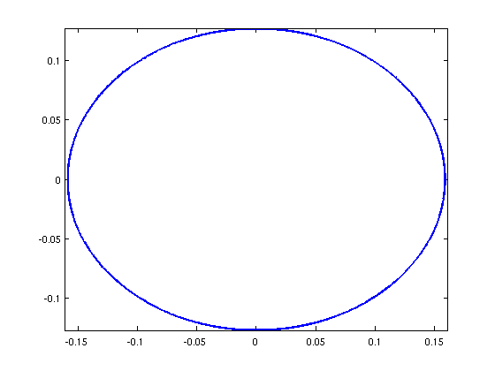

Perimeter of an ellipse
Nick Hale and Nick Trefethen, December 2010
(Chebfun example geom/Ellipse.m)
The ellipse we use is the one used by Poisson in his paper of 1827 [1], with semiaxis lengths 0.5/pi and 0.4/pi. We know thanks to M. Poisson that the perimeter should be (*) 0.902779927
exact = 0.90277992777219;
We now attempt to recompute this value using Chebfun.
theta = chebfun(@(theta) theta,[0,2*pi]); x = (0.5/pi)*cos(theta); y = (0.4/pi)*sin(theta); plot(x,y,'-','LineWidth',2), axis equal arc_length = norm(sqrt(diff(x).^2+diff(y).^2),1)
arc_length = 0.902779927772193
(*) Confusingly Poisson reported this number with a misprint in the 2nd place!
"la valeur approchee de I sera I = 0,9927799272"
References
[1] S.-D. Poisson, Sur le calcul numerique des integrales definies, Memoires de L'Academie Royale des Sciences de L'Institut de France 4 (1827), pp. 571-602 (written in 1823).